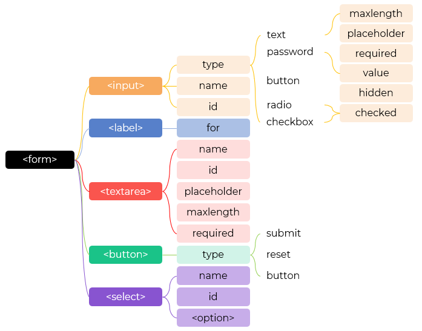

<form action="" method="" target="" name=""></form>
| item | desc |
|---|---|
| action | 表单提交给后端处理的脚本或接口 |
| method | 表单提交方式：
get：默认；请求数据；参数通过 URL 传递；参数地址栏可见 post：提交数据；数据不可见 |
| target | 展示响应的位置:
_self：默认，当前页面 _blank：新页面 _parent：父页面 _top：最顶层页面 iframe：<iframe> 页面 其他：指定页面名称 |
| name | 区分页面中不同的表单 |
url?id=12123
| item | desc |
|---|---|
| <input> | 供用户输入/选择，类型最为丰富，应用最多 |
| <select> | 下拉列表 |
| <textarea> | 多行输入 |
| <button> | 按钮；通过 type 可以指定：
提交 submit：默认 清除 reset：清除表单数据，重新填写 也可使用 <input> 指定对应类型 type |
| <fieldset> | 分组表单元素 |
| <legend> | 分组的标题
操作整个分组，如使用 disabled 属性禁止整个分组 |
| <datalist> | 数据列表，为 <input> 等文本输入元素提供一个输入可选项
permissible or recommended options available to choose |
| item | desc |
|---|---|
| name | 用于提交数据；还用于单选和多选的分组 |
| value | 提交数据的值 |
| id | 通常用和 <label> 的属性 for 绑定，改善用户体验 |
| hidden | 隐藏；也可以使用 CSS 隐藏 display: none |
各表单元素为 border-box
字体大小、类型、边框、背景、轮廓、默认的占位符样式和文本选择样式
不同类型的元素需要单独初始化，如 <input> 初始化：通常根据 type 修改特定的表单元素，参考后续内容
accent-color：利用 accent-color 简单粗暴的统一指定部分元素的 强调色，如 <input> 的 radio、checkbox、range 和 <progress>
appearance：外观；可以设置为 none，从头开始设计UI
// 为属性为 radio 的 input 指定强调色
input[type='radio'] {
accent-color: #f40;
}
// 为了保持一致，通常使用CSS变量全局定义
:root{
accent-color: #ff1493;
}
// 单行输入文本框获取焦点时指定边框
input[type='text']:focus {
border: 1px solid #f40;
}
// 单行输入文本框的占位符样式
input::placeholder {
color: #f40;
}
// 可以不使用具体的元素而统一指定样式
::placeholder {
color: #f40;
}
| item | desc |
|---|---|
| submit | 表单提交 |
| reset | 表单重置 |
| formdata | 表单提交时构建数据 |
<form action="https://www.baidu.com" method="get" name="demo"> <input type="text" name="uname" id=""> <input type="password" name="upass" id=""> <input type="submit" value="submit"> <input type="reset" value="reset"> </form>
<form action="https://www.baidu.com" method="get" name="demo"> <input type="text" name="uname" id=""> <input type="password" name="upass" id=""> <button type="submit" value="submit">submit</button> <button type="reset" value="reset">reset</button> </form>
const form = document.querySelector('form')
form.addEventListener('submit', (e) => {
e.preventDefault()
// ...
// 提交数据
})